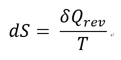
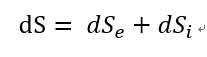
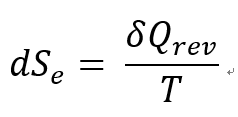
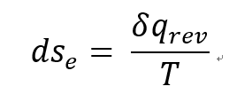
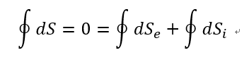
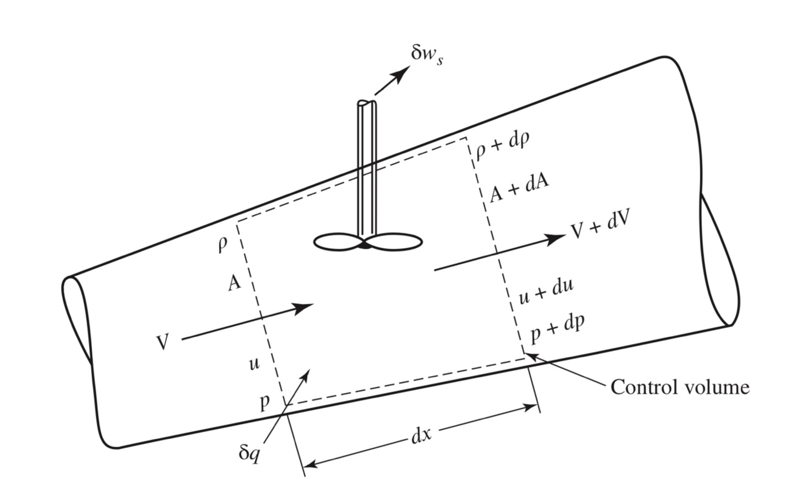
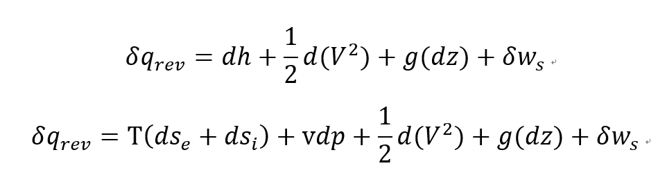
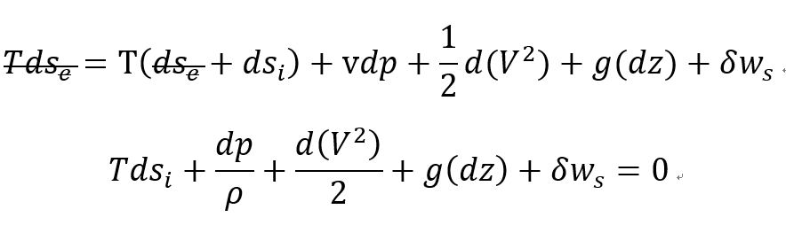

지난번에 분석한 Reynolds Transport Theorem 에 더해서
Control volume의 Entropy 를 분석해보자
Revesrible proc ess 에서 Entropy 는 다음과 같이 정의되었다.
(자세한내용 증명, 정의 밑의 열역학 포스터 참고)

https://jeffdissel.tistory.com/67
[Thermodynamics] Ch 6. The Inequality of Clausius & Entropy
그림과 같이, Reversible cycle engine이 있다고 해보자. 우리는 이전 시간에, QH/QL = Th/TL 임을 확인 하였다. (Ideal gas) 따라서, 반대로, Irreversible cycle 인 경우, Qh 의 열을 동일하게 받았다고 했을때, W irr
jeffdissel.tistory.com
하지만 이 엔트로피 변화는
Reversible 과정
에서만 이라는 것
실제 Process는 거의 Irreversible process 마찰 무조건 있다 무조건
(카르노 기관이 불가능한 이유)
그래서 그래서 엔트로피를 두 part로 분리하였다.
reversible term + irrversible term

그리고 가역과정 엔트로피를 우리가 열역학 시간에 정의한 그대로

라고 정의하자.
System이 열을 받으면 Q>0 , 열이 외부로 나가면 Q<0 이었기 때문에
dSe 는 양수, 음수 상황에 따라서 둘다 가능하다.
Reynolds transport theorem 에서도 모든 표현들을 unit mass로 표현 했으므로
Entropy도 unit mass로 표현 해주면 다음과 같다. (small s)
![[Gas Dynamics] Ch 3 Control Volume analysis - Pressure-E Eq.+Bernoulli's Eq.](./images/img-004.png)

잠깐만
가역적 열 q reversible
이 뭔지 한번 보고가자
[나도 헷갈려서 정리함]
![[Gas Dynamics] Ch 3 Control Volume analysis - Pressure-E Eq.+Bernoulli's Eq.](./images/img-006.jpg)
State 1->2->1 이렇게 순환하는 Cycle 과정이 있다고 하자.
진짜 애매하고 헷갈리지만 중요한 부분은
여기서 열은 가역과정 열이라는 의미 그니까 Friction 으로 인해 발생하는 열이랑은 별개
가역적인 열 = 거꾸로 Process했을때 원래 상태로 돌아갈 수 있는 열
뭔말이냐면
열을 받아서 State 1 에서 novel State2가 되었다고 했을때
State 2가 되고 나서 열을 밖으로 똑같은 양을 빼도 원래 state1으로 돌아갈 수 있으면
그 주고받은 열을 Reversible heat 라고한다.
[열역학 제 2법칙 내용 잠시 언급]
Entropy는 Path function 이 아니라 Point function 이였다. 즉 State 가 같다면 Entropy 값은 같다.
따라서,
Cycle dS = 0 이라는 것은 자명하다.
위에서 정의한대로, 엔트로피를 reversible, irreversible term 두개로 나누어서 생각하면
cycle 식은 다음과 같다.

여기서 irrversible 과정은 엔트로피가 발생하는 과정이다. 따라서
![[Gas Dynamics] Ch 3 Control Volume analysis - Pressure-E Eq.+Bernoulli's Eq.](./images/img-008.png)
즉 Reversible entropy cycle 은 항상 음수이거나 0이라는 것이다. 이 식이 바로 Inequality of Clasius 였다.
https://jeffdissel.tistory.com/67
이제 엔트로피의 정리가 끝났으니 지금까지 구했던 식들과 짬뽕해보자
먼저 열역학 제 1법칙으로 유도했던
잠시 빠르게 언급하면
dq = du + dw = du + pdv (dw = pdv)
dh = du + pdv + vdp ( h = u + pv 양변 미분)
dq = dh-vdp
![[Gas Dynamics] Ch 3 Control Volume analysis - Pressure-E Eq.+Bernoulli's Eq.](./images/img-009.png)
여기서 Heat transfer 은 system에 작용하는 혹은 외부로 방출하는 모든 열을 포함한다.
따라서 Reversible Irreversible 모두 포함하므로 dq = Tds =Tdse+Tdsi 로 표현한다.
즉, 마찰열도 포함
그 이유는 단순하게 이 열역학 제1법칙은 시스템에 작용하는 모든 열에 관한 식이기 때문에
![[Gas Dynamics] Ch 3 Control Volume analysis - Pressure-E Eq.+Bernoulli's Eq.](./images/img-010.png)
이제 전 Post 마지막에 증명하였던 Steady-state 1-D differential form energy equation 에 대입해보 면
(dq, dws 모두 reversible process라 가정하자)


방금전에 정의한 Reversible heat 의 Entropy 형태를 위 식에 대입해주면

최종 Pressure-Energy Equation 이 도출된다.
One of the most important and frequently used Equation.
Friction, shaft work 없다고 가정할경우 Tdsi = 0, dws =0
![[Gas Dynamics] Ch 3 Control Volume analysis - Pressure-E Eq.+Bernoulli's Eq.](./images/img-014.png)
[Euler's equation]
여기서 한술 더 떠서 밀도가 일정하다고 가정하고 (incompressible flow) state1 -> state2 로 적분해주면
중학교 때 배운 베르누이 형님이 나온다.
![[Gas Dynamics] Ch 3 Control Volume analysis - Pressure-E Eq.+Bernoulli's Eq.](./images/img-015.png)
[Bernoulli's equation]